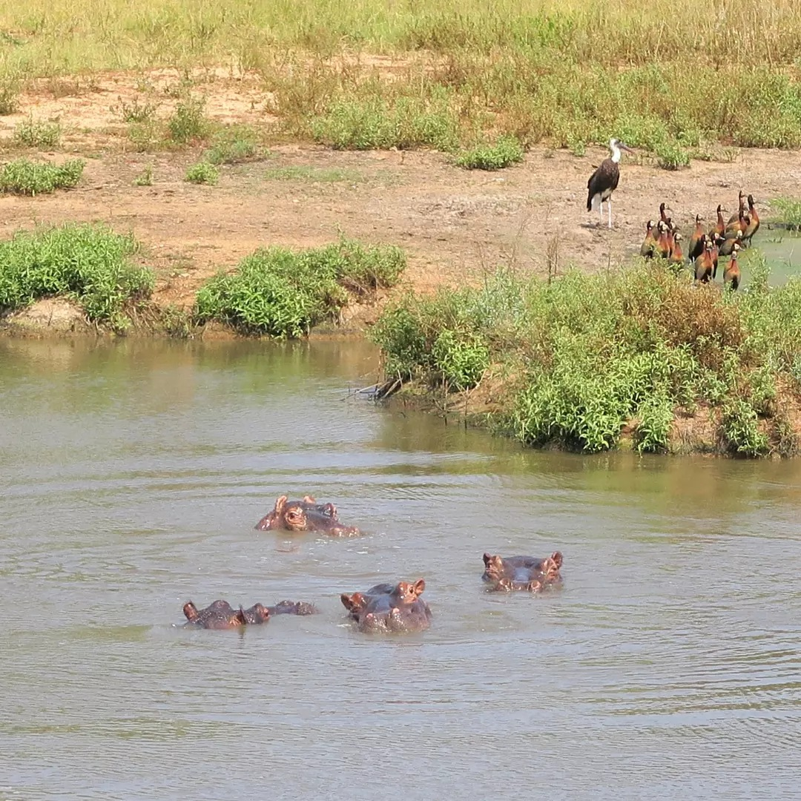
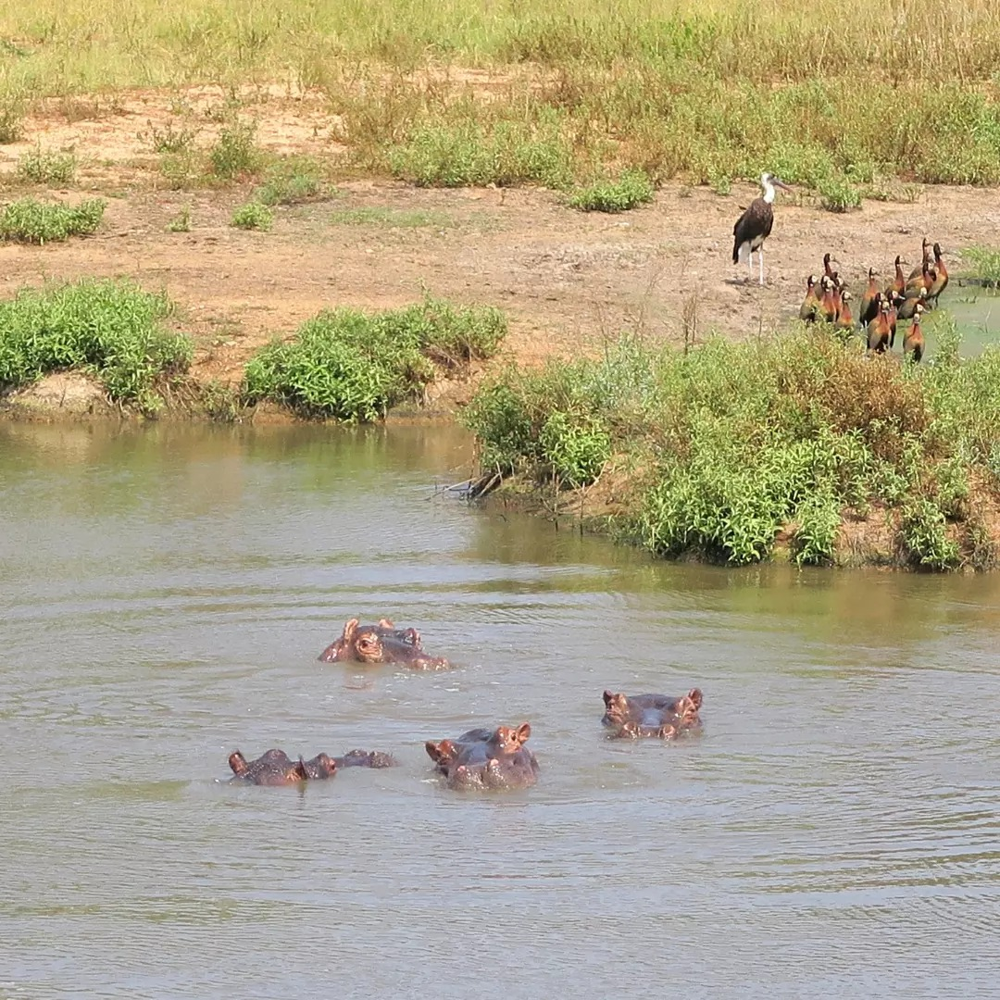

Les Réserves Naturelles
Le fameux par Kruger est à deux pas.
Le Parc Kruger
Découvrez l'extraordinaire richesse de la faune sauvage lors de notre visite exclusive au Parc Kruger, l'une des plus grandes réserves animalières d'Afrique. Le big five pourrait presqu'être garanti ! Plongez au cœur de paysages à couper le souffle, où lions, éléphants, léopards, buffles, giraphes et rhinocéros évoluent librement dans leur habitat naturel. Accompagné de guides experts, vous explorerez des routes et des sentiers secrets, bénéficiant d'une vue imprenable sur les scènes de la vie sauvage.
 

La réserve d'éléphants de Maputo
VEmbarquez pour un safari unique dans la Réserve d'Éléphants de Maputo au Mozambique et partez à la rencontre des éléphants majestueux qui peuplent cette réserve sauvage. Explorez cette zone de conservation préservée en 4x4 et observez ces animaux fascinants évoluant dans leur habitat naturel. Vous aurez également l'opportunité de découvrir une faune et une flore riches et variées, avec notamment des giraphes, zèbres, hippopotames, impalas, phacochères, ainsi qu' une multitude d'oiseaux.


Combo Eswatini
Le centre est situé sur la plage du Palmeiras, vous profiterez de toutes ses installations entre 2 sessions : Restaurant et Beach Bar avec vue directe sur les riders, Bungalows équipés, maisons de vacances, camping, boutique, wifi, équipe accueillante et souriante, le Palmeiras est un des tout premiers établissements de la lagune. Plus d'info : le Palmeiras.


Notre avis
possible sur plusieurs jours, nous nous occupons des réservations, transferts... Kruger fantastique, Maputo plus intime, Eswatini si vraiment envie de le découvrir.